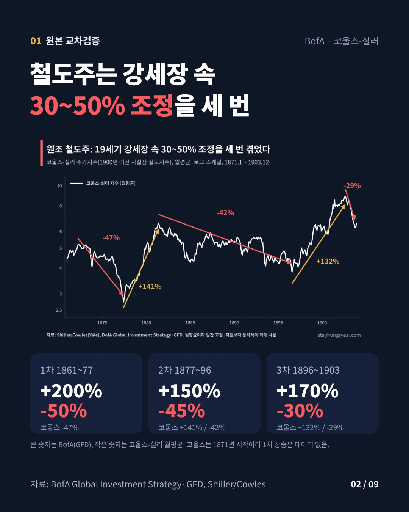
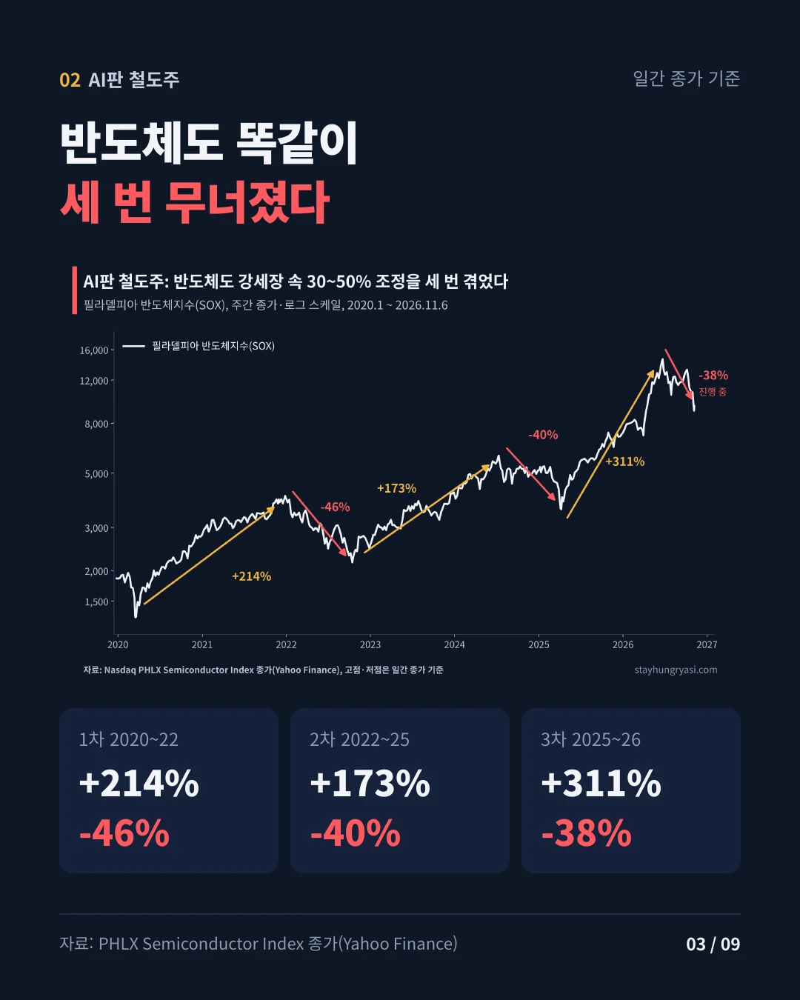
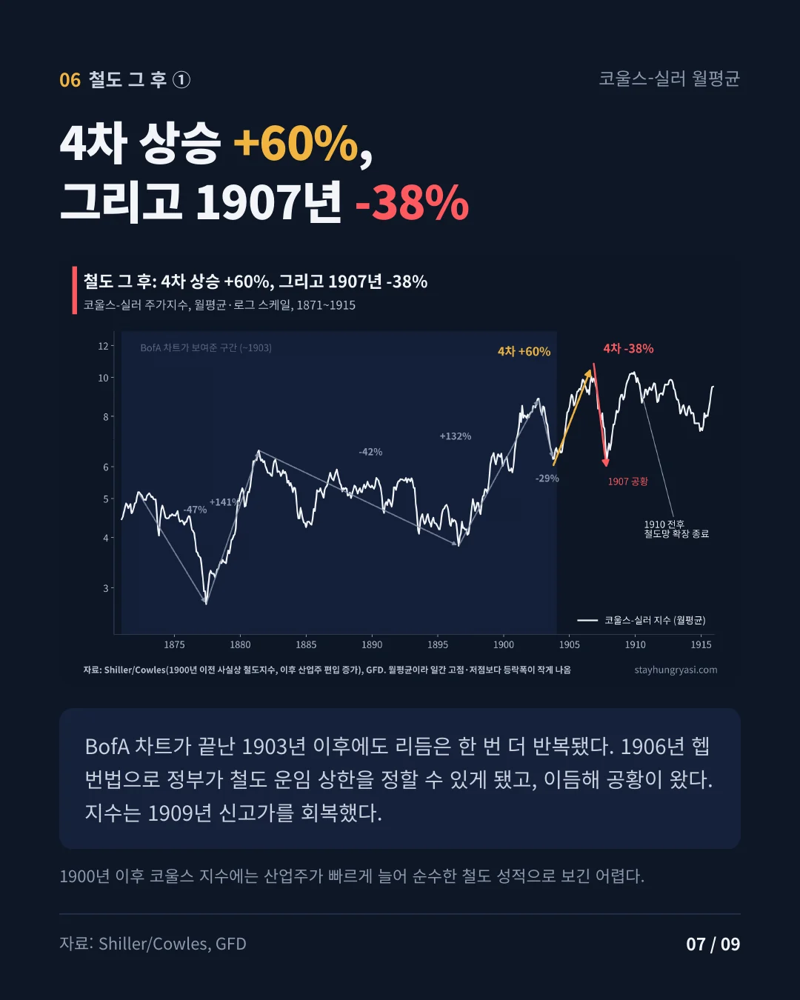
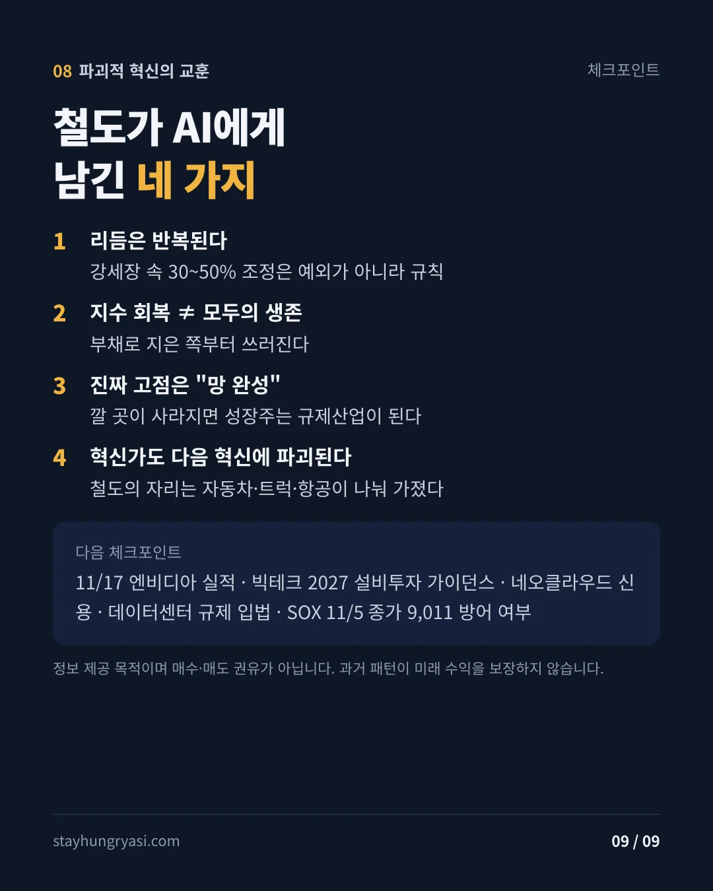

데이터 기준 2026년 11월 6일 미국 정규장 종가 · 작성 2026년 11월 9일(한국 시간) · stayhungryasi.com
표기 규칙: 현대 주가는 Yahoo Finance 일간 종가(지수)와 수정종가(개별주)로 직접 계산했다. 19세기 수치는 BofA·GFD 원본과 실러(코울스) 월간 데이터를 함께 적었다. '해석'은 작성자 판단이다. 투자 권유가 아니다.
19세기 후반(1800년대 후반) 철도주와 2020년대 반도체는 130년을 사이에 두고 강세장 속에서 거의 같은 크기로 세 번 무너졌다. 이 글은 그 리듬을 실제 데이터로 재현하고, 철도가 그 뒤 어떻게 됐는지까지 따라간다.
핵심만 9장으로 요약했다. 이미지를 누르면 크게 볼 수 있다.
BofA는 GFD 데이터로 S&P 500 철도지수를 그려 19세기 후반 강세장 속 세 번의 대형 조정을 보여줬다. 이 수치를 실러 교수가 공개한 코울스 장기 주가지수(1871년 시작)와 대조했다. 1900년 이전 뉴욕증권거래소 시가총액의 대부분이 철도였기 때문에 이 시기 코울스 지수는 사실상 철도 단일 업종지수다(CFA Institute).
| 구간 | BofA (GFD) | 코울스-실러 (월평균) | 코울스 기준 고점·저점 |
|---|---|---|---|
| 1차 상승 | +200% | 데이터 없음 | 1871년 시작 |
| 1차 조정 | -50% | -47% | 1872.4 → 1877.6 |
| 2차 상승 | +150% | +141% | 1877.6 → 1881.6 |
| 2차 조정 | -45% | -42% | 1881.6 → 1896.8 |
| 3차 상승 | +170% | +132% | 1896.8 → 1902.9 |
| 3차 조정 | -30% | -29% | 1902.9 → 1903.10 |
코울스-실러는 월평균 값이라 일간 고점·저점보다 등락폭이 작게 나온다. 3차 상승의 차이가 가장 큰 것은 1896년 이후 산업주 편입이 늘어난 영향으로 추정된다.
BofA 원본은 업종지수다. 개별 대장주를 대입하면 이미 살아남은 승자를 고른 셈이라 그림이 미화된다. 이번 조정에서 엔비디아는 10월 6일 고점 대비 -24%(11월 5일 종가)였지만, SOX는 이미 6월 22일에 고점을 찍고 -38%까지 밀렸다. 11월 5일 기준 SOXX 30종목 중 28개가 고점 대비 20% 이상 빠진 약세장이었고 15개는 50% 넘게 하락했다(Benzinga). 업종이 먼저 무너지고 대장이 마지막까지 버틴 장세다.
또 하나의 단서가 있다. 1900년 초 철도는 미국 증시 시가총액의 63%를 차지했다(Credit Suisse Yearbook). 당시 철도지수는 업종지수이자 시장지수였다. 그래서 오늘은 업종(SOX)과 시장(나스닥100)을 함께 봐야 원본과 같은 구도가 된다.
| 조정 국면 (일간 종가, 고점 → 저점) | SOX | 나스닥100 | 엔비디아 |
|---|---|---|---|
| 2020 코로나 | -35.0% | -28.0% | -37.5% |
| 2022 금리 쇼크 | -46.5% | -35.6% | -66.3% |
| 2024~25 엔캐리·딥시크·관세 | -39.7% | -22.9% | -36.9% |
| 2026 현재 (11/5 저점까지) | -38.4% | -14.7% | -24.1% |
세 지표의 고점 날짜는 서로 다르다. 엔비디아는 액면분할·배당을 반영한 수정종가다.
SOX의 세 사이클을 철도와 나란히 놓으면 조정 폭은 놀랄 만큼 비슷하다(-50/-45/-30 대 -46/-40/-38). 다만 두 가지는 짚어야 한다. 첫째, SOX의 1차 상승은 ChatGPT 출시 이전인 2020년 3월 코로나 저점에서 시작해 AI 랠리라기보다 팬데믹 디지털 붐에 가깝다. 둘째, 3차 상승은 철도(+170%)보다 훨씬 가팔랐다(+311%). 랠리가 약해지다 꺾인 것이 아니라 과열 뒤 급락한 모양이다(해석).

19세기에는 노선을 깐 철도회사가 쓰러지고 레일을 공급한 쪽은 살아남았다. 이번 조정의 순서는 다르다. 시장이 두려워하는 것은 설비투자 감소이고, 그 돈을 매출로 받는 반도체가 정면으로 맞고 있다. 현금이 풍부한 하이퍼스케일러(MSFT·AMZN·GOOGL·META·ORCL 동일가중, 작성자 구성)는 6월 1일 고점 대비 -14.1%로 나스닥100(-13.6%)과 비슷하게 버텼다.
철도 시대를 닮은 곳은 부채로 설비를 짓는 네오클라우드다. 11월 6일 종가 기준 코어위브는 고점 대비 -74.7%, 아이렌 -71.7%, 네비우스 -54.8%다. 가트너는 2030년까지 네오클라우드의 80% 이상이 독립적으로 살아남지 못할 것으로 전망했다(Trending Topics). 1893년 공황 때 미국 철도 연장의 4분의 1이 법정관리에 들어갔던 장면과 겹친다(Panic of 1893).

BofA 차트는 1903년에서 끝나지만 리듬은 한 번 더 반복됐다. 코울스 지수는 1903년 10월 저점에서 1906년 9월까지 약 60% 올랐고, 1907년 공황으로 11월까지 약 38% 빠졌다(월평균). 그 직전인 1906년 헵번법으로 정부가 철도 운임 상한을 정할 수 있게 됐다. 지수는 1909년 말 신고가를 회복했다. 단, 1900년 이후 코울스 지수에는 산업주 비중이 빠르게 늘어 순수한 철도 성적으로 보기는 어렵다.
진짜 전환은 그 다음이었다. GFD에 따르면 1910년 무렵 철도가 새로 확장할 곳은 거의 남지 않았고, 1차 세계대전 중에는 정부가 철도를 국유화했다. 철도주는 1920년대에 당시 기준 사상 최고치를 찍었지만, 1929~32년 고점 대비 90% 넘게 폭락해 100년 전인 1832년 수준 아래로 내려갔다(GFD).
| 시기 | 철도에 일어난 일 |
|---|---|
| 1903~1907 | 4차 상승 약 +60%, 1906 헵번법, 1907 공황 약 -38% (코울스 월평균) |
| 1910 전후 | 철도망 확장 사실상 종료 |
| 1917~1920 | 1차 세계대전 중 정부 국유화 |
| 1920년대 | 철도주 당시 기준 사상 최고치 |
| 1929~1932 | 고점 대비 -90% 이상, 1832년 수준 하회 |
| 1932~1942 | 1937년까지 약 5배 반등 후 재하락, 1942년 바닥 |
| 1956~현재 | 화물·컨테이너 운송으로 부활, 업계는 소수 기업으로 통합 |
철도의 미국 증시 비중은 1900년 63%에서 1% 미만으로 줄었다(EconLife). 그럼에도 1830~2023년 철도지수의 장기 수익률은 배당 포함 연 8.3%였다. 철도는 망한 산업이 아니라 평범한 산업이 됐다.
카를로타 페레스는 기술혁명이 금융 광풍 → 붕괴 → 제도 재정비(전환점) → 실물 확산 순으로 진행된다고 본다. 전환점에는 정치가 개입한다. 철도에서는 그레인저법(1870년대), 주간통상법(1887), 헵번법(1906)이 그 역할을 했다. 2026년 AI에서도 뉴욕주가 7월 대형 데이터센터에 1년 모라토리엄을(6sqft), 텍사스주가 8월 전력망 연결 승인 일시정지를 시행했다(Jones Day). 11월 중간선거 직후에는 데이터센터 규제 우려 속에 SOX가 하루 -12.25%로 사상 두 번째로 큰 낙폭을 냈다(24/7 Wall St.). 다만 페레스 본인은 AI를 새로운 혁명이 아니라 1971년 시작된 정보통신 혁명의 완결 기술로 본다. 위 대입은 그의 틀을 빌린 해석이다.
자본 측면에서도 철도 후반부와 닮은 신호가 있다. 2026년 아마존·알파벳·메타·마이크로소프트·스페이스X의 설비투자는 8,030억~8,280억달러로 예상된다(Hargreaves Lansdown). 아마존의 최근 12개월 잉여현금흐름은 -424억달러, 알파벳의 3분기 잉여현금흐름은 -91억달러였다(Tech Insider). 반대로 마이크로소프트는 제3자 데이터센터 용량 지연으로 2026년 설비투자 전망을 낮췄고, 다른 빅테크는 2027년 투자를 더 늘리겠다고 밝혀 신호는 엇갈린다.
철도가 남긴 교훈은 네 가지다(해석). 강세장 속 30~50% 조정은 예외가 아니라 규칙이다. 지수가 회복해도 부채로 지은 쪽부터 쓰러진다. 성장의 진짜 고점은 깔 곳이 사라지는 "망 완성" 시점이다. 그리고 혁신가도 결국 다음 혁신에 자리를 내준다. 철도의 지위는 자동차·트럭·항공이 나눠 가졌다.
| 항목 | 왜 중요한가 |
|---|---|
| 11/17 엔비디아 3분기 실적 | 설비투자 둔화가 실제 주문 감소로 이어지는지 보는 첫 데이터 |
| 빅테크 2027 설비투자 가이던스 | "망 완성" 시점의 선행지표. 하향 조정이 확산되는지 |
| 네오클라우드 주가·신용 | 부채형 운영사의 자금조달 여건 |
| 데이터센터 규제 입법 | 모라토리엄 확산 여부. 철도 규제와 같은 전환점 신호 |
| SOX 11/5 종가 9,011 | 이 아래 마감 시 조정이 철도 3차(-30%)를 넘어 더 깊어질 가능성 |
현대 주가는 Yahoo Finance 일간 종가(지수)와 수정종가(개별주)로 2026년 11월 6일까지 계산했다. 고점·저점은 일간 종가 기준이며 SOX 차트는 주간 종가에 고점·저점 일자를 더해 그렸다. 하이퍼스케일러 바스켓은 MSFT·AMZN·GOOGL·META·ORCL 동일가중, 일간 리밸런싱이다. 19세기 수치는 BofA·GFD 원본과 실러/코울스 월간 데이터를 병기했다.
stayhungryasi.com · 정보 제공 목적의 리서치이며 투자 권유가 아니다. 과거의 패턴과 역사적 비유가 미래 수익을 보장하지 않는다. 투자 판단과 책임은 투자자 본인에게 있다.